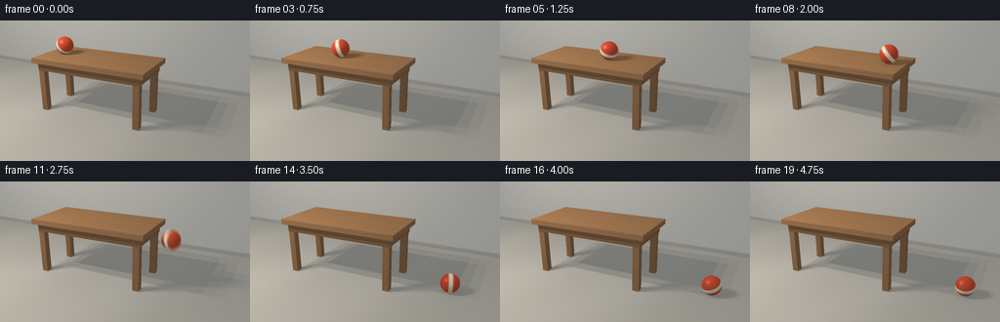
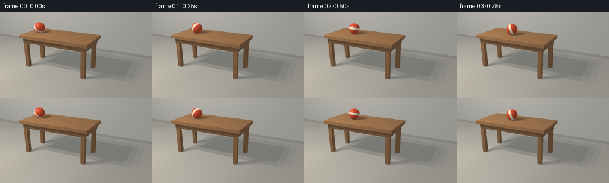

CODING AGENTS AS PIXEL WORLD MODELS
traex/GPT-6.1-Sol · instance_preservation_0019
点击播放 · 原生 RGB 像素
逐轮保存的候选
回放视频、检查图与代码变化。
每份候选均可单独播放。实际图片检查记录在下方工具轨迹中。
候选 01播放与检查图
点击播放 · 原生 RGB 像素


展开代码变化
--- 上一保存版本
+++ 本次保存版本
@@ -0,0 +1,261 @@
+"""Deterministic, analytic RGB rendering of a rolling ball. No external renderer."""
+from pathlib import Path
+import json
+import numpy as np
+from PIL import Image
+import artifact_io
+
+ROOT = Path(__file__).resolve().parent
+SPEC = json.loads((ROOT / 'task_spec.json').read_text())
+W, H = SPEC['width'], SPEC['height']
+SS = 3
+WW, HH = W * SS, H * SS
+DTYPE = np.float32
+
+# A locked-off camera leaves room on the right for the landing.
+CAM = np.array([3.05, 3.3, 6.1], dtype=DTYPE)
+TARGET = np.array([.12, .64, 0], dtype=DTYPE)
+F = TARGET-CAM; F /= np.linalg.norm(F)
+RIGHT = np.cross(F, [0, 1, 0]); RIGHT /= np.linalg.norm(RIGHT)
+UP = np.cross(RIGHT, F)
+yy, xx = np.mgrid[0:HH, 0:WW]
+focal = WW / (2*np.tan(np.deg2rad(44/2)))
+RAYS = (F + ((xx+.5-WW/2)/focal)[..., None]*RIGHT - ((yy+.5-HH/2)/focal)[..., None]*UP).reshape(-1, 3).astype(DTYPE)
+RAYS /= np.linalg.norm(RAYS, axis=1)[:, None]
+NPIX = len(RAYS)
+
+# Solid oak top, recessed apron, and four square legs.
+BOXES = []
+def box(lo, hi, mat):
+ BOXES.append((np.array(lo, dtype=DTYPE), np.array(hi, dtype=DTYPE), mat))
+box([-2.0, 1.23, -.69], [.85, 1.35, .69], 2)
+box([-1.9, 1.04, .52], [.75, 1.23, .59], 3)
+box([-1.9, 1.04, -.59], [.75, 1.23, -.52], 3)
+box([-1.89, 1.04, -.52], [-1.81, 1.23, .52], 3)
+box([.66, 1.04, -.52], [.74, 1.23, .52], 3)
+for x in [-1.82, .65]:
+ for z in [-.51, .51]:
+ box([x-.075, .012, z-.075], [x+.075, 1.23, z+.075], 4)
+# A quiet plaster wall and a restrained baseboard.
+box([-30, 0, -2.58], [30, .11, -2.52], 5)
+
+
+def intersect_box(origin, rays, low, high):
+ inv = np.where(np.abs(rays)>1e-9, 1/rays, 1e9)
+ a = (low-origin)*inv; b = (high-origin)*inv
+ near = np.minimum(a,b); far = np.maximum(a,b)
+ t0 = near.max(axis=1); t1 = far.min(axis=1)
+ return t0, (t1 >= np.maximum(t0, .0001)), near
+
+
+def static_scene():
+ depth = np.full(NPIX, 1e8, dtype=DTYPE)
+ norm = np.zeros((NPIX, 3), dtype=DTYPE)
+ material = np.zeros(NPIX, dtype=np.int8)
+ # Floor and rear wall.
+ for axis, loc, normal, mat in [(1,0,[0,1,0],0),(2,-2.61,[0,0,1],1)]:
+ t = (loc-CAM[axis])/RAYS[:,axis]
+ use = (t>0)&(t<depth)
+ depth[use]=t[use]; norm[use]=normal; material[use]=mat
+ for lo, hi, mat in BOXES:
+ t, hit, near = intersect_box(CAM, RAYS, lo, hi)
+ use=hit&(t<depth)&(t>0)
+ axis = near[use].argmax(axis=1)
+ localnorm=np.zeros((use.sum(),3), dtype=DTYPE)
+ localnorm[np.arange(use.sum()),axis] = -np.sign(RAYS[use][np.arange(use.sum()),axis])
+ depth[use]=t[use]; norm[use]=localnorm; material[use]=mat
+ p=CAM+RAYS*depth[:,None]
+ return depth,p,norm,material
+
+
+def palette(p, n, mat):
+ col=np.empty_like(p)
+ x,y,z = p.T
+ # Low-contrast limestone floor, with very fine granular texture.
+ noise = np.sin(x*187.1+z*123.7)*np.sin(x*99.2-z*143.1)
+ grain=.012*noise + .011*np.sin(x*2.4+z*.7)
+ col[:]=np.array([.49,.465,.407])+grain[:,None]
+ sel=mat==1
+ wall=np.array([.62,.61,.565])[None,:]+(.005*np.sin(x[sel]*113+y[sel]*153))[:,None]
+ col[sel]=wall
+ sel=(mat>=2)&(mat<=4)
+ # Fibers run along the long dimension of the top, vertically on legs.
+ along=np.where(mat[sel]==4,y[sel],x[sel])
+ across=np.where(np.abs(n[sel,1])>.5,z[sel],np.where(np.abs(n[sel,2])>.5,y[sel],z[sel]))
+ warp=across + .014*np.sin(along*3.1+across*7)+.006*np.sin(along*8.3+1.5)
+ waves=np.sin(warp*120+.5*np.sin(along*2.5))
+ finer=np.sin(warp*320+along*4)
+ hair=np.power(.5+.5*np.sin(warp*540+np.sin(along*6)),18)
+ g=.027*waves+.011*finer-.021*hair
+ top=(mat[sel]==2)&(n[sel,1]>.5)
+ # Three joined oak planks: delicate, not cartoon outlines.
+ joint=np.zeros_like(g)
+ for seam in [-.23,.23]:
+ joint+=np.exp(-((z[sel]-seam)/.0035)**2)*.10*top
+ g-=joint
+ base=np.tile([.38,.195,.083],(sel.sum(),1))
+ base[mat[sel]==3]*=.82
+ base[mat[sel]==4]*=.9
+ col[sel]=base+g[:,None]*np.array([1.,.66,.32])
+ col[mat==5]=[.46,.445,.405]
+ return np.clip(col,.025,.95)
+
+
+LIGHTS=[]
+# Sample a large softbox/window to get honest soft contact shadows.
+for a,b in [(-.75,-.6),(.0,-.6),(.75,-.6),(-.75,.6),(.0,.6),(.75,.6)]:
+ LIGHTS.append(np.array([-3.4+a,5.4,3.3+b],dtype=DTYPE))
+
+
+def visibility(p,n,light):
+ origin=p+n*.0025
+ delta=light-origin
+ dist=np.linalg.norm(delta,axis=1)
+ direction=delta/dist[:,None]
+ visible=np.ones(len(p),dtype=DTYPE)
+ for lo,hi,_ in BOXES:
+ t,hit,_ = intersect_box(origin,direction,lo,hi)
+ visible[hit&(t>.0001)&(t<dist)]=0
+ return visible, direction
+
+
+def light_component(p,n,col,light,view,mat):
+ delta=light-p; distance=np.linalg.norm(delta,axis=1)
+ ld=delta/distance[:,None]
+ diffuse=np.maximum(0,(ld*n).sum(axis=1))
+ half=ld+view; half/=np.maximum(np.linalg.norm(half,axis=1),1e-5)[:,None]
+ ndh=np.maximum(0,(n*half).sum(axis=1))
+ ball=mat==6
+ spec=np.where(ball,.28*np.power(ndh,65),.075*np.power(ndh,38))
+ spec*=diffuse
+ attenuation=np.clip(32/(distance**2),.40,1.30)
+ return (col*diffuse[:,None]*.74 + spec[:,None])*np.array([1.04,.98,.89])*attenuation[:,None]/len(LIGHTS)
+
+
+DEPTH,P,N,MAT=static_scene()
+COLOR=palette(P,N,MAT)
+VIEW=-RAYS
+# Broad sky/fill illumination retains detail inside cast shadows.
+ambient=.31+.13*np.maximum(N[:,1],0)+.035*np.maximum(N[:,2],0)
+BASE=COLOR*ambient[:,None]*np.array([.93,.98,1.05])
+STATIC=[]
+for light in LIGHTS:
+ visible,_=visibility(P,N,light)
+ STATIC.append(light_component(P,N,COLOR,light,VIEW,MAT)*visible[:,None])
+
+RADIUS=.21
+# Simulate a small rigid ball with a table-edge contact and damped floor bounces.
+def trajectory():
+ step=.0005
+ times=np.arange(0,5.06,step)
+ out=np.empty((len(times),4),dtype=DTYPE)
+ px=-1.53; py=1.35+RADIUS; vx=.99; vy=0.; angle=0.
+ for k,t in enumerate(times):
+ out[k]=[px,py,-.015,angle]
+ if px<=.85 and py>=1.35+RADIUS-.0001:
+ px+=vx*step; py=1.35+RADIUS; vy=0.
+ else:
+ vy-=9.81*step
+ px+=vx*step; py+=vy*step
+ # Collision against the rounded path around the tabletop corner.
+ if px>.85 and py>1.35:
+ dx=px-.85; dy=py-1.35; d=np.hypot(dx,dy)
+ if d<RADIUS:
+ nx=dx/d; ny=dy/d
+ px=.85+nx*RADIUS; py=1.35+ny*RADIUS
+ vn=vx*nx+vy*ny
+ if vn<0: vx-=vn*nx; vy-=vn*ny
+ if py<RADIUS:
+ py=RADIUS
+ if vy<-.28: vy=-vy*.36; vx*=.86
+ else: vy=0.
+ if py<=RADIUS+.00005 and abs(vy)<.28:
+ py=RADIUS; vy=0.; vx=max(0,vx-.69*step)
+ angle+=vx/RADIUS*step
+ return times,out
+TIMES,PATH=trajectory()
+
+
+def state(t):
+ k=np.clip(t/.0005,0,len(PATH)-1)
+ lo=int(k); hi=min(lo+1,len(PATH)-1)
+ return PATH[lo]*(1-(k-lo))+PATH[hi]*(k-lo)
+
+
+def sphere_shadow(p,n,light,center):
+ origin=p+n*.003
+ delta=light-origin; dist=np.linalg.norm(delta,axis=1)
+ ld=delta/dist[:,None]
+ rel=center-origin
+ proj=(rel*ld).sum(axis=1)
+ d2=(rel*rel).sum(axis=1)-proj*proj
+ # Exact ray-sphere shadow; large-light averaging makes its edge soft.
+ return ~((proj>0)&(proj<dist)&(d2<RADIUS**2))
+
+
+def render(t):
+ s=state(t); center=s[:3]; angle=s[3]
+ rgb=BASE.copy()
+ for light,contribution in zip(LIGHTS,STATIC):
+ vis=sphere_shadow(P,N,light,center)
+ rgb+=contribution*vis[:,None]
+ oc=CAM-center
+ b=RAYS@oc; c=oc@oc-RADIUS**2
+ discr=b*b-c
+ candidates=discr>0
+ bt=-b-np.sqrt(np.maximum(discr,0))
+ hit=candidates&(bt>0)&(bt<DEPTH)
+ if hit.any():
+ bp=CAM+RAYS[hit]*bt[hit,None]
+ bn=(bp-center)/RADIUS
+ # Ball-fixed ivory band rotates with the orange-red rubber shell.
+ ca,sa=np.cos(angle),np.sin(angle)
+ q=bn.copy()
+ q[:,0]=ca*bn[:,0]-sa*bn[:,1]
+ q[:,1]=sa*bn[:,0]+ca*bn[:,1]
+ stripe_axis=np.array([.71,.64,.295],dtype=DTYPE); stripe_axis/=np.linalg.norm(stripe_axis)
+ latitude=np.abs(q@stripe_axis)
+ cream=1-np.clip((latitude-.20)/.025,0,1)
+ shell=np.tile([.70,.078,.027],(len(bp),1))
+ ballcol=shell*(1-cream[:,None])+np.array([.89,.80,.57])*cream[:,None]
+ border=np.exp(-((latitude-.245)/.012)**2)
+ ballcol*=1-.20*border[:,None]
+ dimples=.012*np.sin(q[:,0]*210)*np.sin(q[:,1]*190)*np.sin(q[:,2]*180)
+ ballcol*=1+dimples[:,None]
+ bmat=np.full(len(bp),6)
+ ba=.31+.13*np.maximum(bn[:,1],0)+.035*np.maximum(bn[:,2],0)
+ ballrgb=ballcol*ba[:,None]*np.array([.93,.98,1.05])
+ for light in LIGHTS:
+ vis,_=visibility(bp,bn,light)
+ ballrgb+=light_component(bp,bn,ballcol,light,-RAYS[hit],bmat)*vis[:,None]
+ # Gentle ambient occlusion beneath the ball and along the table legs.
+ rgb[hit]=ballrgb
+ # Local contact occlusion on whichever supporting horizontal surface is below.
+ planar=np.maximum(0,N[:,1])
+ dx=P[:,0]-center[0]; dz=P[:,2]-center[2]
+ gap=np.maximum(0,center[1]-RADIUS-P[:,1])
+ contact=np.exp(-(dx*dx+dz*dz)/(.028+gap*.065))*np.exp(-gap*6)*planar
+ rgb*=1-.22*contact[:,None]
+ # Mild photographic vignette, smooth gamma encoding.
+ rgb=rgb.reshape(HH,WW,3)
+ vignette=1-.075*((xx/WW-.5)**2+(yy/HH-.5)**2)
+ rgb*=vignette[:,:,None]
+ rgb=np.clip(rgb,0,1)
+ return np.power(rgb,1/2.2)
+
+
+def main():
+ frames=[]
+ for i in range(SPEC['frames']):
+ t=i/SPEC['fps']
+ # Short shutter: enough to soften fast flight without ghosting the ball.
+ linear=sum(render(max(0,t+offset)) for offset in [-.012,0,.012])/3
+ image=Image.fromarray(np.uint8(np.clip(linear*255+.5,0,255)))
+ image=image.resize((W,H),Image.Resampling.LANCZOS)
+ frames.append(np.asarray(image))
+ s=state(t)
+ print(f'frame {i:02d}: ball=({s[0]:.3f}, {s[1]:.3f}, {s[2]:.3f})',flush=True)
+ artifact_io.save(np.stack(frames),ROOT)
+ print('Saved all required artifacts.',flush=True)
+
+if __name__=='__main__': main()
可观测工具轨迹
实际执行的命令与返回图片。
命令 1exit 0
/bin/bash -lc 'ls -la && cat prompt.txt && cat GENERATION_RULES.md && cat task_spec.json'
命令 2exit 0
/bin/bash -lc 'cat artifact_io.py && ls -la .tmp'
命令 3exit 0
/bin/bash -lc "python - <<'PY' import numpy as np c=np.array([3.,2.55,6.]); target=np.array([.15,.62,0.]);fwd=target-c;fwd/=np.linalg.norm(fwd);r=np.cross(fwd,[0,1,0]);r/=np.linalg.norm(r);u=np.cross(r,fwd);f=256/(2*np.tan(np.deg2rad(49/2))) for p in [[-2,1.18,.65],[.9,1.18,.65],[-2,1.18,-.65],[.9,1.18,-.65],[-1.5,1.355,-.1],[.9,1.355,-.1],[2.3,.175,-.1],[-1.78,0,.46],[.67,0,.46]]: a=np.array(p)-c; print(p, np.round([128+f*a@r/(a@fwd),72-f*a@u/(a@fwd)],1)) PY"
命令 4exit 0
/bin/bash -lc "cat > generate.py <<'PY'
\"\"\"Deterministic, analytic RGB rendering of a rolling ball. No external renderer.\"\"\"
from pathlib import Path
import json
import numpy as np
from PIL import Image
import artifact_io
ROOT = Path(__file__).resolve().parent
SPEC = json.loads((ROOT / 'task_spec.json').read_text())
W, H = SPEC['width'], SPEC['height']
SS = 3
WW, HH = W * SS, H * SS
DTYPE = np.float32
# A locked-off camera leaves room on the right for the landing.
CAM = np.array([3.05, 3.3, 6.1], dtype=DTYPE)
TARGET = np.array([.12, .64, 0], dtype=DTYPE)
F = TARGET-CAM; F /= np.linalg.norm(F)
RIGHT = np.cross(F, [0, 1, 0]); RIGHT /= np.linalg.norm(RIGHT)
UP = np.cross(RIGHT, F)
yy, xx = np.mgrid[0:HH, 0:WW]
focal = WW / (2*np.tan(np.deg2rad(44/2)))
RAYS = (F + ((xx+.5-WW/2)/focal)[..., None]*RIGHT - ((yy+.5-HH/2)/focal)[..., None]*UP).reshape(-1, 3).astype(DTYPE)
RAYS /= np.linalg.norm(RAYS, axis=1)[:, None]
NPIX = len(RAYS)
# Solid oak top, recessed apron, and four square legs.
BOXES = []
def box(lo, hi, mat):
BOXES.append((np.array(lo, dtype=DTYPE), np.array(hi, dtype=DTYPE), mat))
box([-2.0, 1.23, -.69], [.85, 1.35, .69], 2)
box([-1.9, 1.04, .52], [.75, 1.23, .59], 3)
box([-1.9, 1.04, -.59], [.75, 1.23, -.52], 3)
box([-1.89, 1.04, -.52], [-1.81, 1.23, .52], 3)
box([.66, 1.04, -.52], [.74, 1.23, .52], 3)
for x in [-1.82, .65]:
for z in [-.51, .51]:
box([x-.075, .012, z-.075], [x+.075, 1.23, z+.075], 4)
# A quiet plaster wall and a restrained baseboard.
box([-30, 0, -2.58], [30, .11, -2.52], 5)
def intersect_box(origin, rays, low, high):
inv = np.where(np.abs(rays)>1e-9, 1/rays, 1e9)
a = (low-origin)*inv; b = (high-origin)*inv
near = np.minimum(a,b); far = np.maximum(a,b)
t0 = near.max(axis=1); t1 = far.min(axis=1)
return t0, (t1 >= np.maximum(t0, .0001)), near
def static_scene():
depth = np.full(NPIX, 1e8, dtype=DTYPE)
norm = np.zeros((NPIX, 3), dtype=DTYPE)
material = np.zeros(NPIX, dtype=np.int8)
# Floor and rear wall.
for axis, loc, normal, mat in [(1,0,[0,1,0],0),(2,-2.61,[0,0,1],1)]:
t = (loc-CAM[axis])/RAYS[:,axis]
use = (t>0)&(t<depth)
depth[use]=t[use]; norm[use]=normal; material[use]=mat
for lo, hi, mat in BOXES:
t, hit, near = intersect_box(CAM, RAYS, lo, hi)
use=hit&(t<depth)&(t>0)
axis = near[use].argmax(axis=1)
localnorm=np.zeros((use.sum(),3), dtype=DTYPE)
localnorm[np.arange(use.sum()),axis] = -np.sign(RAYS[use][np.arange(use.sum()),axis])
depth[use]=t[use]; norm[use]=localnorm; material[use]=mat
p=CAM+RAYS*depth[:,None]
return depth,p,norm,material
def palette(p, n, mat):
col=np.empty_like(p)
x,y,z = p.T
# Low-contrast limestone floor, with very fine granular texture.
noise = np.sin(x*187.1+z*123.7)*np.sin(x*99.2-z*143.1)
grain=.012*noise + .011*np.sin(x*2.4+z*.7)
col[:]=np.array([.49,.465,.407])+grain[:,None]
sel=mat==1
wall=np.array([.62,.61,.565])[None,:]+(.005*np.sin(x[sel]*113+y[sel]*153))[:,None]
col[sel]=wall
sel=(mat>=2)&(mat<=4)
# Fibers run along the long dimension of the top, vertically on legs.
along=np.where(mat[sel]==4,y[sel],x[sel])
across=np.where(np.abs(n[sel,1])>.5,z[sel],np.where(np.abs(n[sel,2])>.5,y[sel],z[sel]))
warp=across + .014*np.sin(along*3.1+across*7)+.006*np.sin(along*8.3+1.5)
waves=np.sin(warp*120+.5*np.sin(along*2.5))
finer=np.sin(warp*320+along*4)
hair=np.power(.5+.5*np.sin(warp*540+np.sin(along*6)),18)
g=.027*waves+.011*finer-.021*hair
top=(mat[sel]==2)&(n[sel,1]>.5)
# Three joined oak planks: delicate, not cartoon outlines.
joint=np.zeros_like(g)
for seam in [-.23,.23]:
joint+=np.exp(-((z[sel]-seam)/.0035)**2)*.10*top
g-=joint
base=np.tile([.38,.195,.083],(sel.sum(),1))
base[mat[sel]==3]*=.82
base[mat[sel]==4]*=.9
col[sel]=base+g[:,None]*np.array([1.,.66,.32])
col[mat==5]=[.46,.445,.405]
return np.clip(col,.025,.95)
LIGHTS=[]
# Sample a large softbox/window to get honest soft contact shadows.
for a,b in [(-.75,-.6),(.0,-.6),(.75,-.6),(-.75,.6),(.0,.6),(.75,.6)]:
LIGHTS.append(np.array([-3.4+a,5.4,3.3+b],dtype=DTYPE))
def visibility(p,n,light):
origin=p+n*.0025
delta=light-origin
dist=np.linalg.norm(delta,axis=1)
direction=delta/dist[:,None]
visible=np.ones(len(p),dtype=DTYPE)
for lo,hi,_ in BOXES:
t,hit,_ = intersect_box(origin,direction,lo,hi)
visible[hit&(t>.0001)&(t<dist)]=0
return visible, direction
def light_component(p,n,col,light,view,mat):
delta=light-p; distance=np.linalg.norm(delta,axis=1)
ld=delta/distance[:,None]
diffuse=np.maximum(0,(ld*n).sum(axis=1))
half=ld+view; half/=np.maximum(np.linalg.norm(half,axis=1),1e-5)[:,None]
ndh=np.maximum(0,(n*half).sum(axis=1))
ball=mat==6
spec=np.where(ball,.28*np.power(ndh,65),.075*np.power(ndh,38))
spec*=diffuse
attenuation=np.clip(32/(distance**2),.40,1.30)
return (col*diffuse[:,None]*.74 + spec[:,None])*np.array([1.04,.98,.89])*attenuation[:,None]/len(LIGHTS)
DEPTH,P,N,MAT=static_scene()
COLOR=palette(P,N,MAT)
VIEW=-RAYS
# Broad sky/fill illumination retains detail inside cast shadows.
ambient=.31+.13*np.maximum(N[:,1],0)+.035*np.maximum(N[:,2],0)
BASE=COLOR*ambient[:,None]*np.array([.93,.98,1.05])
STATIC=[]
for light in LIGHTS:
visible,_=visibility(P,N,light)
STATIC.append(light_component(P,N,COLOR,light,VIEW,MAT)*visible[:,None])
RADIUS=.21
# Simulate a small rigid ball with a table-edge contact and damped floor bounces.
def trajectory():
step=.0005
times=np.arange(0,5.06,step)
out=np.empty((len(times),4),dtype=DTYPE)
px=-1.53; py=1.35+RADIUS; vx=.99; vy=0.; angle=0.
for k,t in enumerate(times):
out[k]=[px,py,-.015,angle]
if px<=.85 and py>=1.35+RADIUS-.0001:
px+=vx*step; py=1.35+RADIUS; vy=0.
else:
vy-=9.81*step
px+=vx*step; py+=vy*step
# Collision against the rounded path around the tabletop corner.
if px>.85 and py>1.35:
dx=px-.85; dy=py-1.35; d=np.hypot(dx,dy)
if d<RADIUS:
nx=dx/d; ny=dy/d
px=.85+nx*RADIUS; py=1.35+ny*RADIUS
vn=vx*nx+vy*ny
if vn<0: vx-=vn*nx; vy-=vn*ny
if py<RADIUS:
py=RADIUS
if vy<-.28: vy=-vy*.36; vx*=.86
else: vy=0.
if py<=RADIUS+.00005 and abs(vy)<.28:
py=RADIUS; vy=0.; vx=max(0,vx-.69*step)
angle+=vx/RADIUS*step
return times,out
TIMES,PATH=trajectory()
def state(t):
k=np.clip(t/.0005,0,len(PATH)-1)
lo=int(k); hi=min(lo+1,len(PATH)-1)
return PATH[lo]*(1-(k-lo))+PATH[hi]*(k-lo)
def sphere_shadow(p,n,light,center):
origin=p+n*.003
delta=light-origin; dist=np.linalg.norm(delta,axis=1)
ld=delta/dist[:,None]
rel=center-origin
proj=(rel*ld).sum(axis=1)
d2=(rel*rel).sum(axis=1)-proj*proj
# Exact ray-sphere shadow; large-light averaging makes its edge soft.
return ~((proj>0)&(proj<dist)&(d2<RADIUS**2))
def render(t):
s=state(t); center=s[:3]; angle=s[3]
rgb=BASE.copy()
for light,contribution in zip(LIGHTS,STATIC):
vis=sphere_shadow(P,N,light,center)
rgb+=contribution*vis[:,None]
oc=CAM-center
b=RAYS@oc; c=oc@oc-RADIUS**2
discr=b*b-c
candidates=discr>0
bt=-b-np.sqrt(np.maximum(discr,0))
hit=candidates&(bt>0)&(bt<DEPTH)
if hit.any():
bp=CAM+RAYS[hit]*bt[hit,None]
bn=(bp-center)/RADIUS
# Ball-fixed ivory band rotates with the orange-red rubber shell.
ca,sa=np.cos(angle),np.sin(angle)
q=bn.copy()
q[:,0]=ca*bn[:,0]-sa*bn[:,1]
q[:,1]=sa*bn[:,0]+ca*bn[:,1]
stripe_axis=np.array([.71,.64,.295],dtype=DTYPE); stripe_axis/=np.linalg.norm(stripe_axis)
latitude=np.abs(q@stripe_axis)
cream=1-np.clip((latitude-.20)/.025,0,1)
shell=np.tile([.70,.078,.027],(len(bp),1))
ballcol=shell*(1-cream[:,None])+np.array([.89,.80,.57])*cream[:,None]
border=np.exp(-((latitude-.245)/.012)**2)
ballcol*=1-.20*border[:,None]
dimples=.012*np.sin(q[:,0]*210)*np.sin(q[:,1]*190)*np.sin(q[:,2]*180)
ballcol*=1+dimples[:,None]
bmat=np.full(len(bp),6)
ba=.31+.13*np.maximum(bn[:,1],0)+.035*np.maximum(bn[:,2],0)
ballrgb=ballcol*ba[:,None]*np.array([.93,.98,1.05])
for light in LIGHTS:
vis,_=visibility(bp,bn,light)
ballrgb+=light_component(bp,bn,ballcol,light,-RAYS[hit],bmat)*vis[:,None]
# Gentle ambient occlusion beneath the ball and along the table legs.
rgb[hit]=ballrgb
# Local contact occlusion on whichever supporting horizontal surface is below.
planar=np.maximum(0,N[:,1])
dx=P[:,0]-center[0]; dz=P[:,2]-center[2]
gap=np.maximum(0,center[1]-RADIUS-P[:,1])
contact=np.exp(-(dx*dx+dz*dz)/(.028+gap*.065))*np.exp(-gap*6)*planar
rgb*=1-.22*contact[:,None]
# Mild photographic vignette, smooth gamma encoding.
rgb=rgb.reshape(HH,WW,3)
vignette=1-.075*((xx/WW-.5)**2+(yy/HH-.5)**2)
rgb*=vignette[:,:,None]
rgb=np.clip(rgb,0,1)
return np.power(rgb,1/2.2)
def main():
frames=[]
for i in range(SPEC['frames']):
t=i/SPEC['fps']
# Short shutter: enough to soften fast flight without ghosting the ball.
linear=sum(render(max(0,t+offset)) for offset in [-.012,0,.012])/3
image=Image.fromarray(np.uint8(np.clip(linear*255+.5,0,255)))
image=image.resize((W,H),Image.Resampling.LANCZOS)
frames.append(np.asarray(image))
s=state(t)
print(f'frame {i:02d}: ball=({s[0]:.3f}, {s[1]:.3f}, {s[2]:.3f})',flush=True)
artifact_io.save(np.stack(frames),ROOT)
print('Saved all required artifacts.',flush=True)
if __name__=='__main__': main()
PY
OPENBLAS_NUM_THREADS=1 python generate.py"命令 5exit 0
/bin/bash -lc "python - <<'PY'
from pathlib import Path
import numpy as np
from PIL import Image
p=Path('.')
a=np.load('pixels.npz')['pixels']
assert a.shape==(144,256,20)
assert len(list((p/'frames').glob('*.png')))==20
for f in (p/'frames').glob('*.png'):
im=Image.open(f); assert im.mode=='RGB' and im.size==(256,144)
assert (p/'index.html').exists() and (p/'inspection.png').exists()
print('Verified: 20 RGB frames at 256Ã144; pixels.npz, frames/, and index.html exist.')
print('Mean changed-pixel fraction:', np.mean(a[:,:,1:] "'!= a[:,:,:-1]))
PY'保存候选 1 份；完成命令 5 次；可验证图片返回 0 张。原始 API 响应与完整日志保留在本地。